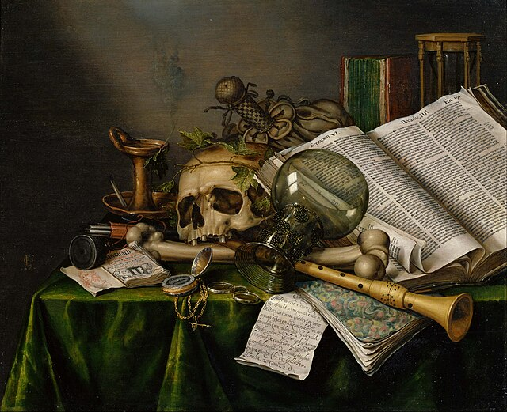
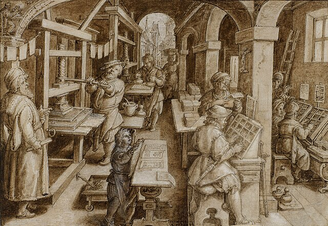

The Guttenberg Engine
An Introduction
Draft — March 2026

In 1440, Gutenberg built a machine that could speak in pages.
In 1822, Babbage built a machine that could think in numbers.
In 2027 you will build a machine to merge them together.
What Is This?
A game where books are alive
The Guttenberg Engine is a game where books are alive — not just collectible resources, but living worlds with borders, immune systems, and inhabitants who don't know they're being watched. Players navigate the literary web — the invisible network connecting every book ever written — recruiting characters, forming squads, and waging faction warfare across a map that IS human literature.
The source material is Project Gutenberg — over 70,000 free, public domain books spanning centuries, cultures, and genres. The engine is a modern LLM. The result is a strategy game where the weapon is scholarship and the battlefield is the written word.

You choose your squad from the vast universe of literature — characters who carry stats, conditions, skills, and reputations that accumulate across every encounter. They remember what's been done to them. They remember who sent them. But the literary web is eroding. Texts are losing coherence, characters are slipping their bindings, and the spaces between books are growing dark. What your team loses out there, it loses forever. The parchment doesn't reset. It accretes.
What follows are two completely machine-generated playtest sessions — preambles to the action where two teams competing for the same objective are recruited by Bookhunters with very different aims and methods. One recruits through intimacy. The other recruits through spectacle.
The Mission
What both sessions are about

Two Operators
Same mission. Opposite methods.
Click either scenario below to read the session.
What the Engine Computes
These two sessions — one intimate, one spectacular — were spontaneously generated yet remain diametrically opposed in forms that emerged, unscripted, but engaged.
The Wednesday Group is quiet, careful, built on trust. The Tuesday Group is loud, reckless, built on leverage. But both sessions surface the same truth: that the characters who emerge from these encounters are shaped by the operator who summoned them. One method produces loyalty. The other produces velocity. Neither is safe.
This is what the Guttenberg Engine computes: not content, but consequences. Emergent narrative from the collision of game mechanics and literary memory. Not scripted. Not pre-authored. Generated — by the interaction of characters who remember everything they've been through, operators who want different things from them, and a literary web that is vast, ancient, and starting to come apart.

Every book ever written is already in there. The engine is running. It just needs someone to turn the key.
All source texts via Project Gutenberg